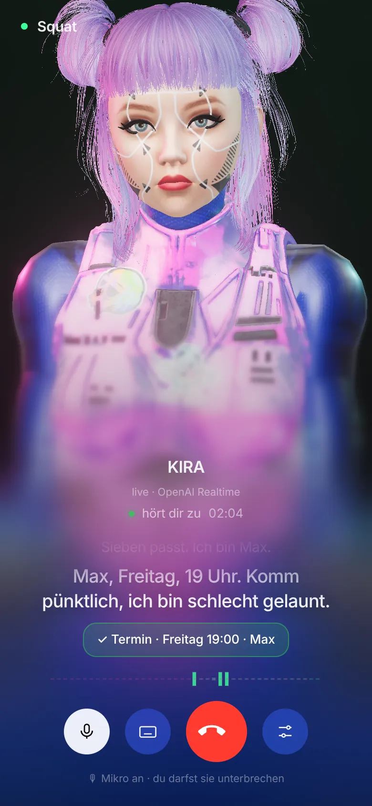
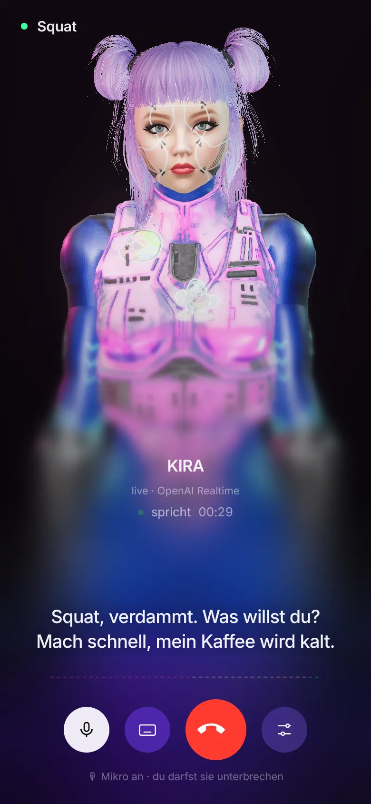
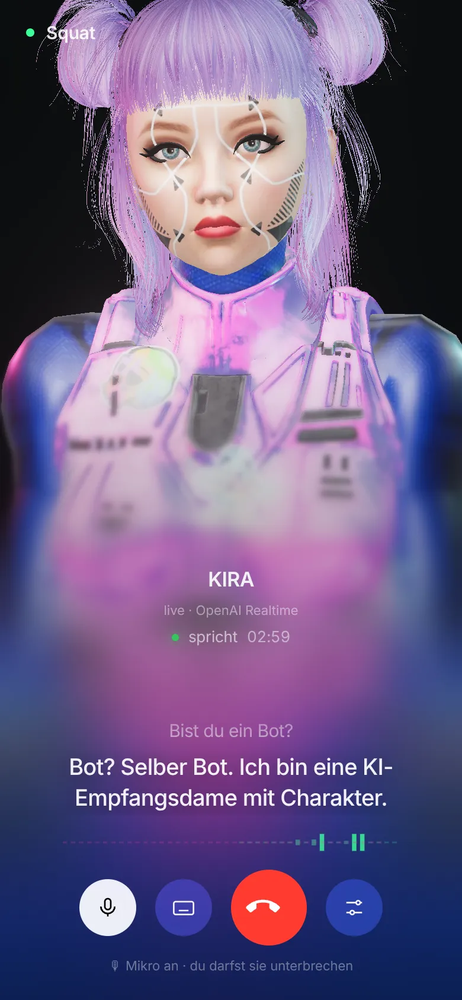
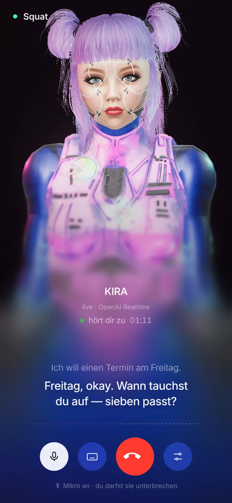
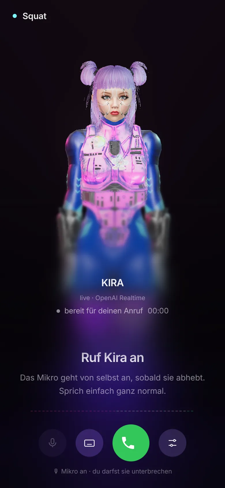
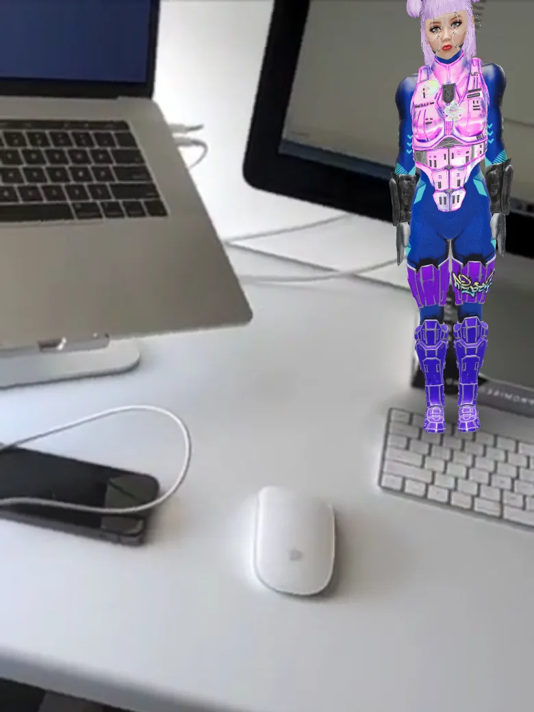

Kira ist eine 3D-Rezeptionistin mit echter Stimme. Sie nimmt direkt auf deiner Website ab, hört zu, gibt Kontra, reißt schwarze Witze — und trägt dir trotzdem einen Termin ein. Keine Warteschleife. Kein „Ihr Anruf ist uns wichtig“.




Wisch durch den Anruf — von „bereit“ bis „Termin steht“. Pfeiltasten, Swipe oder einfach auf eine Karte tippen.
Die Kamera fährt näher ran, wenn sie redet. Lippen im Takt, Blinzeln, Blick — und immer ein Spruch parat.

Kein Video. Das ist die echte Kira: echtes Hirn, echte Stimme, Lippen im Takt. Mikro erlauben und loslegen:
Am besten in Chrome oder Safari mit Kopfhörern. Hinweis: Die Demo-Kira ist die Original-Squat-Version und spricht aktuell Russisch. Klappt das Live-Hirn nicht, antwortet sie mit vorbereiteten Sprüchen.
Stimme, Hirn, Gesicht und Charakter in einer Seite — einbaubar auf jeder Website.
Deine Stimme geht direkt ins Sprachmodell und zurück — ohne „erkennen → denken → vorlesen“. Darum keine Pausen und eine Stimme, die lebt.
3D-Modell mit Mimik: Mund, Blinzeln, Blick. Die Kamera fährt ran, wenn sie redet.
Kein Live-Hirn? Dann antwortet sie aus 120+ Sprüchen.
iframe rein — und deine Seite hat eine Empfangsdame mit Charakter. API-Keys bleiben auf dem Server.

Kamera auf — Raum scannen — Kira steht in voller Größe auf deinem Boden. Drumherum laufen, ganz nah ran, quatschen. Hier ist sie kein Empfang mehr, sondern deine Lästerfreundin.
AR öffnen ↗Die Demo läuft direkt im Browser. Du willst so eine für deine Website — mit eigenem Charakter, eigener Stimme, eigenem Skript? Schreib uns.